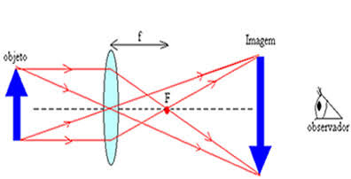

OQUE É UMA IMAGEM? É a representação visual de um objeto produzida pela luz ao ser refletida, refratada ou captada por dispositivos ópticos. COMO AS IMAGENS SÃO FORMADAS? A luz emitida ou refletida pelos objetos chega aos nossos olhos ou a instrumentos ópticos, permitindo a visualização da imagem. IMAGENS REAIS E VIRTUAIS Reais: podem ser projetadas em uma tela. Virtuais: não podem ser projetadas e são vistas apenas ao olhar para o sistema óptico. APLICAÇÕES NO COTIDIANO Câmeras fotográficas, telescópios, microscópios, espelhos, celulares e óculos utilizam princípios de formação de imagens.
